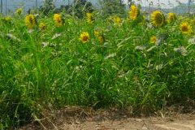

出雲空港付近のひまわり
2008/9/21
今日はひまわり祭りの予定でしたが、大雨がふったのでどうなったでしょうか？
私は車でひまわり畑の横を通りかかったんですが、沢山のヒマワリが咲いてて綺麗でした。もう秋ですが、秋でも綺麗に花が咲くものなんですね。
ヒマワリの量が多いので、見ごたえがあっていいですね。
「凄いな。」って普通に思いました。
島根県出雲市斐川町沖洲
2008/9/21
今日はひまわり祭りの予定でしたが、大雨がふったのでどうなったでしょうか？
私は車でひまわり畑の横を通りかかったんですが、沢山のヒマワリが咲いてて綺麗でした。もう秋ですが、秋でも綺麗に花が咲くものなんですね。
ヒマワリの量が多いので、見ごたえがあっていいですね。
「凄いな。」って普通に思いました。
2008/8/13
今年も沢山のヒマワリが咲いているかな？と思いながら車で出雲空港への道を走っていたんですが、全然ヒマワリは植わってなくて、普通に畑になってました。
ここ何年かはお祭りとかしててにぎやかだったんですが、もうなくなってしまったんでしょうか？
詳しい事は分からないですが、ひとつ観光地がなくなりましたね。
また復活して欲しいですね。
2007/8/19
今年は8/11,12がお祭りだったと思ったんですが、混むので外して行ってみました。
ちょっと水不足のせいか頭が重そうですが、沢山の花が咲いててまだまだいい景色です。
ここのヒマワリは背が低くて小さいんですが、その分見下ろして沢山の花を見る事が出来ていいです。

向日葵なので太陽の方向を向いているんですが、駐車場があると思い北に行ってしまったため、後ろや横の姿を多くみるはめになってしまいました。夏の炎天下に歩く距離が多くなってしまって失敗しました。
次に行く時は注意します。